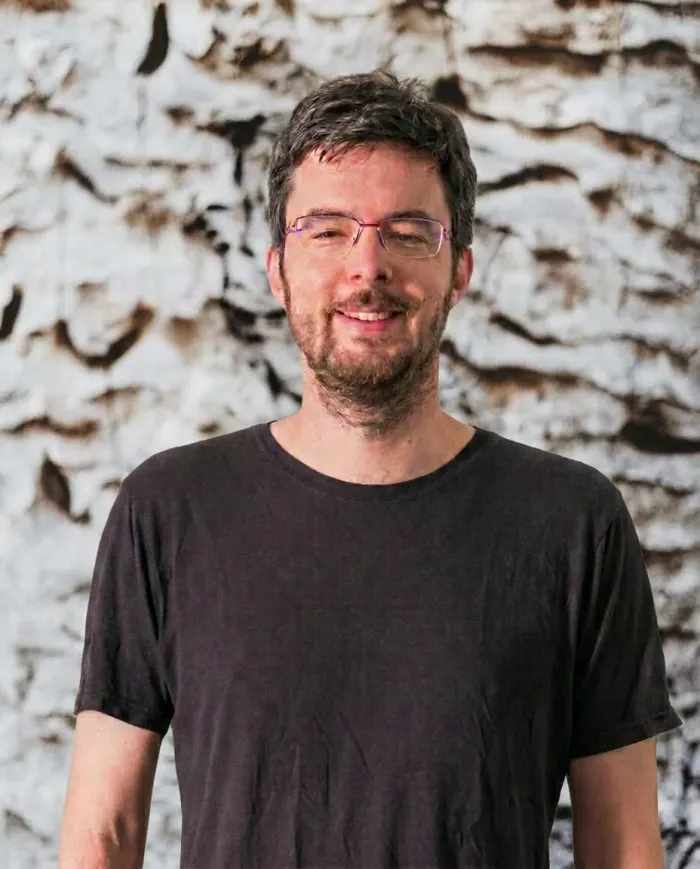

Seit 2005 begleiten die Coaches von it-agile Teams, Führungskräfte und ganze Organisationen – pragmatisch, erfahren und konsequent an eurer Wertschöpfung ausgerichtet.
Alle it-agile Coaches sind fest angestellt, lernen voneinander und bringen jahrelange Praxis mit – vom Teamraum bis in die Geschäftsführung.

„Konflikte sind wertvoll – eine Gelegenheit, gemeinsam zu wachsen.“
Coacht seit 2012 Manager und Teams in agilen Methoden wie Scrum und Kanban. Akkreditierter Kanban Trainer und ausgebildeter Mediator auf Basis der gewaltfreien Kommunikation.
Von einzelnen Teams bis zur ganzen Organisation – wir begleiten dort, wo Veränderung wirklich entsteht.
Direkte Begleitung eurer Teams im Alltag: Kommunikation, Motivation und Liefergeschwindigkeit nachhaltig steigern – nicht in Workshops, sondern in echter Arbeit.
1:1- und Gruppen-Coaching für Führungskräfte nach dem Mutual-Learning-Ansatz: Selbstorganisation fördern und wirksame Entscheidungswege etablieren.
Strategische Begleitung eures Wandels: flexible Organisationsstrukturen schaffen, Kultur entwickeln und Veränderung tragfähig verankern.
Einführung und laufende Begleitung von Objectives & Key Results – für transparente Ziele und echte Strategiefokussierung statt Zahlenfriedhof.
Frameworks einführen ist leicht – sie wirksam machen nicht. Wir coachen eure Rollen und Systeme, bis Flow und Fokus wirklich entstehen.
Wenn viele Teams liefern sollen, entscheiden Abhängigkeiten. Wir gestalten Skalierung mit Prinzipien statt Rezeptbuch.
Nachhaltige Agilität braucht solides Handwerk: Wir coachen Entwicklungsteams in Clean Code, TDD, Refactoring und Continuous Delivery – direkt am eigenen Code.
Unser Ziel ist nicht, möglichst lange zu bleiben – sondern euch möglichst schnell unabhängig zu machen.
Wir hören zu, stellen unbequeme Fragen und klären gemeinsam, wo Coaching wirklich wirkt – ehrlich, auch wenn die Antwort „kein Coaching“ lautet.
Ihr bekommt den Coach, der zu eurem Kontext passt – nach Erfahrung, Schwerpunkt und Chemie. Kein anonymer Beraterpool.
Unsere Coaches arbeiten mit euren Teams an echten Themen: in Sprints, Meetings und Entscheidungen – vor Ort in Hamburg oder remote.
Erfolg heißt für uns: Ihr braucht uns nicht mehr. Wir bauen Fähigkeiten bei euch auf, messen Wirkung und ziehen uns bewusst zurück.
it-agile wurde 2005 in Hamburg gegründet und arbeitet im gesamten deutschsprachigen Raum. Hanseatisch heißt für uns: ehrlich beraten, verlässlich liefern und nur versprechen, was wir halten können.
Unverbindliches Erstgespräch – 45 Minuten, ehrliche Einschätzung, konkrete nächste Schritte.
Direkter Kontakt: fabian.dittberner@it-agile.de